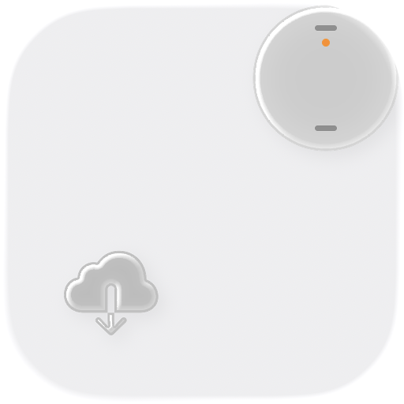

The Mac app that pulls recordings off your Soundcore Work AI voice recorder straight into iCloud Drive.
No phone. No account. No cloud service.
Get it on GitHub Free and open source. MIT licence. macOS 26 or later.The app looks for the recorder every 15 seconds. When it finds it, it copies every recording that is not already in iCloud Drive.
Each file is an Ogg/Opus copy of exactly what the device stores. No transcoding. No quality loss.
Audio goes from the recorder to your Mac over Bluetooth. Files land in iCloud Drive › Soundcore Work. Nothing else sees them.
Take it out of the case or tap it. It does not advertise while it sleeps.
The recorder talks to one device at a time. Soundcore Pull waits until the phone lets go.
Recordings show in the list as they download. Show in Finder opens the folder. Delete from Recorder frees space on the device.
scripts/build.sh